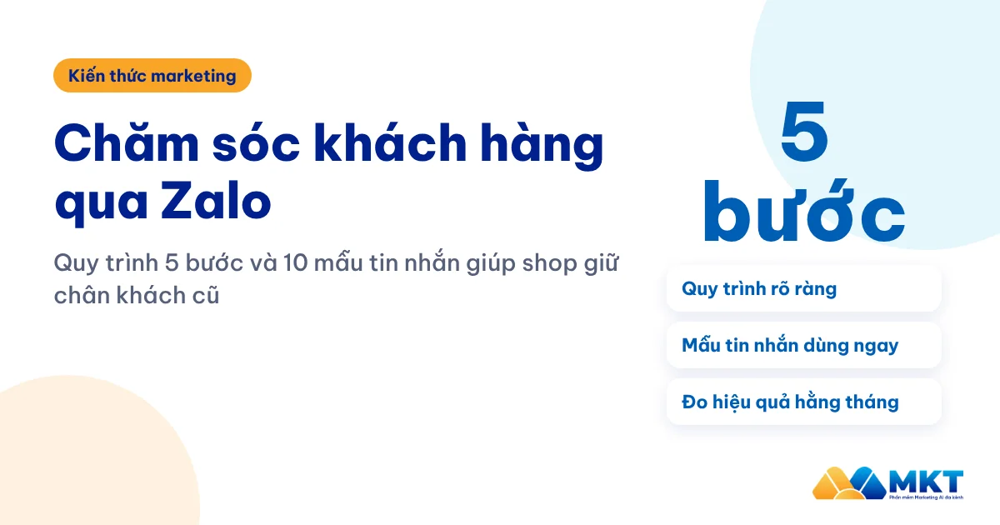
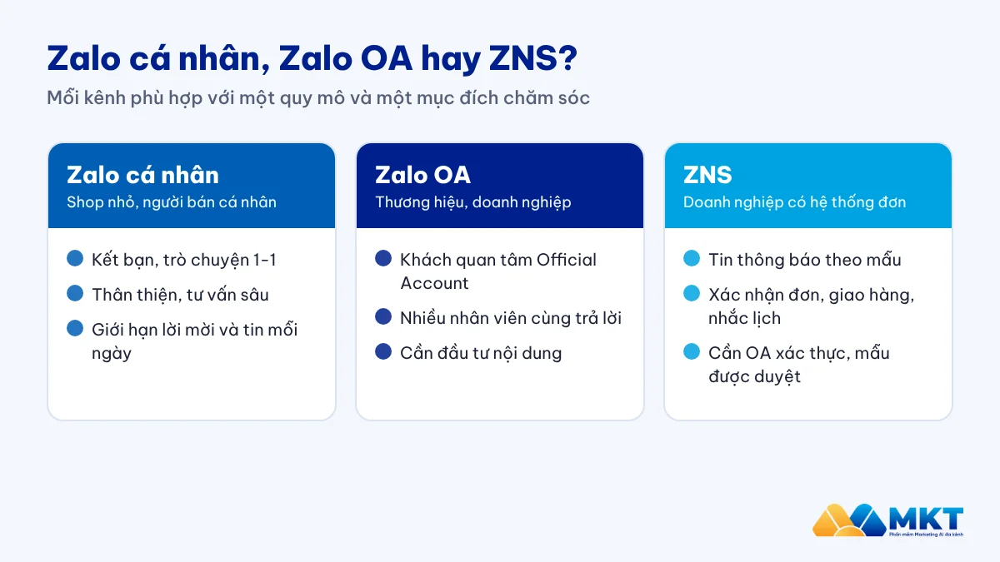
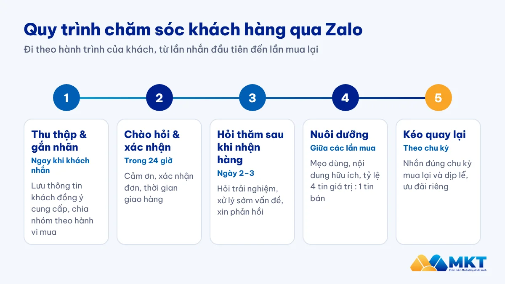
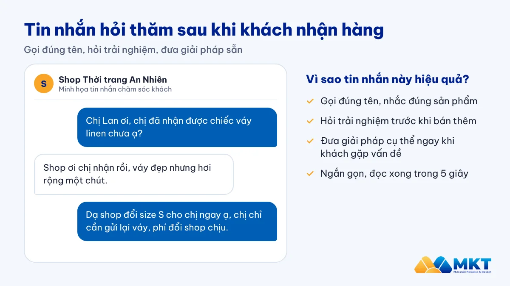
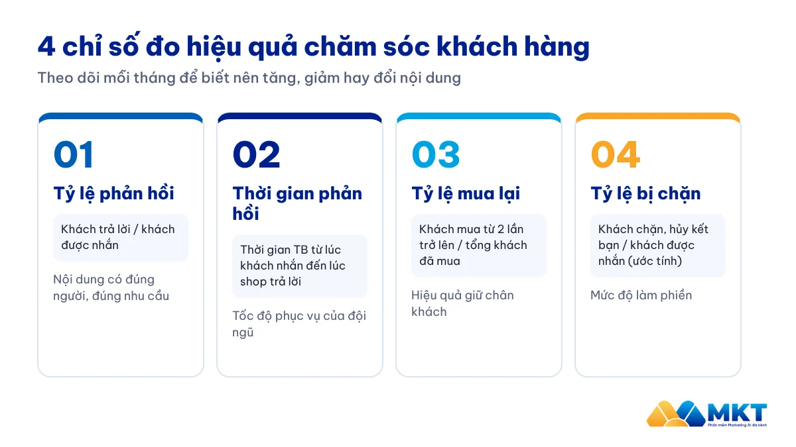

Chăm sóc khách hàng qua Zalo: Quy trình 5 bước và mẫu tin nhắn cho shop

Với nhiều shop online, giữ một khách cũ quay lại mua lần hai thường tốn ít chi phí hơn chạy quảng cáo để có một khách mới. Chăm sóc khách hàng qua Zalo là cách đơn giản để giữ liên lạc với những người đã từng mua hàng, vì phần lớn khách hàng Việt Nam dùng Zalo thường xuyên. Bài viết này của MKT Software tổng hợp quy trình 5 bước, 10 mẫu tin nhắn dùng ngay và cách đo hiệu quả để bạn chăm sóc khách đều đặn mà không làm phiền họ.
I. Vì sao nên chăm sóc khách hàng qua Zalo?
Zalo là một trong những ứng dụng nhắn tin phổ biến nhất tại Việt Nam. Theo kết quả kinh doanh quý II/2026 do VNG công bố, Zalo có 81,3 triệu người dùng hằng tháng. Điều đó có nghĩa là tin nhắn của bạn đến đúng nơi khách hàng đang trò chuyện mỗi ngày, thay vì nằm lẫn trong hộp thư email ít khi được mở.
So với các kênh khác, chăm sóc khách hàng qua Zalo có ba lợi thế rõ rệt:
- Gần gũi: khách đã quen nhắn Zalo với người thân, bạn bè nên dễ phản hồi một tin nhắn lịch sự từ shop.
- Nhanh: khách hỏi đổi size, hỏi đơn hàng hay cần bảo hành đều nhận câu trả lời ngay trong một cuộc trò chuyện.
- Chi phí thấp: một tin hỏi thăm đúng lúc thường rẻ hơn nhiều so với việc tìm một khách hàng mới.
II. Zalo cá nhân, Zalo OA và ZNS: nên dùng kênh nào?
Trước khi xây quy trình, bạn cần chọn đúng “công cụ” trên Zalo. Mỗi loại phù hợp với một quy mô và một mục đích khác nhau:
| Tiêu chí | Zalo cá nhân | Zalo OA | ZNS |
|---|---|---|---|
| Phù hợp với | Shop nhỏ, người bán cá nhân | Thương hiệu, doanh nghiệp | Doanh nghiệp có hệ thống đơn hàng |
| Cách tiếp cận khách | Kết bạn, trò chuyện 1-1 | Khách quan tâm (theo dõi) OA | Gửi tin theo số điện thoại khách đã cung cấp |
| Thế mạnh | Thân thiện, tư vấn sâu | Hình ảnh chuyên nghiệp, nhiều nhân viên cùng trả lời | Tin xác nhận đơn, giao hàng, nhắc lịch theo mẫu |
| Lưu ý | Giới hạn số lời mời và tin nhắn mỗi ngày | Cần đầu tư nội dung để tăng người quan tâm | Cần Zalo OA đã xác thực; mẫu tin phải được duyệt, tính phí theo tin, không dùng cho nội dung quảng cáo thuần |

Thực tế, nhiều shop kết hợp các kênh: dùng Zalo cá nhân để tư vấn và giữ quan hệ gần gũi, dùng Zalo OA hoặc ZNS cho các thông báo mang tính hệ thống như xác nhận đơn hay lịch giao hàng.
III. Quy trình chăm sóc khách hàng qua Zalo 5 bước
Quy trình dưới đây đi theo hành trình của một khách hàng, từ lúc bắt đầu trò chuyện đến khi quay lại mua lần tiếp theo.

1. Thu thập và gắn nhãn khách hàng ngay từ đầu
Mỗi khách nhắn tin hoặc đặt hàng, hãy lưu lại thông tin và gắn nhãn theo nhóm: khách mới, đã mua, khách quen, khách lâu chưa quay lại. Nhãn càng rõ, tin nhắn sau này càng đúng người, đúng thời điểm. Chỉ lưu thông tin khách tự cung cấp và đồng ý để shop liên hệ lại; cách làm này phù hợp với nguyên tắc về sự đồng ý của chủ thể dữ liệu trong Luật Bảo vệ dữ liệu cá nhân (Luật số 91/2025/QH15), có hiệu lực từ ngày 01/01/2026.
Nếu bạn đang có nhiều nhân viên cùng chăm sóc khách trên Zalo, hãy tham khảo thêm cách quản lý nhân viên sale, CSKH trên Zalo để tệp khách không bị phân tán.
2. Chào hỏi và xác nhận đơn trong 24 giờ đầu
Ấn tượng đầu tiên quyết định khách có tiếp tục đọc tin của shop hay không. Hãy gửi lời cảm ơn, xác nhận lại sản phẩm, địa chỉ và thời gian giao hàng dự kiến. Với khách chưa kết bạn Zalo, một lời mời kết bạn Zalo ngắn gọn, nói rõ bạn là ai, sẽ giúp khách dễ đồng ý hơn.
3. Hỏi thăm sau khi khách nhận hàng
Khoảng 2–3 ngày sau khi giao hàng, hãy hỏi khách đã dùng sản phẩm thế nào, có cần hướng dẫn thêm không. Đây là lúc phát hiện sớm vấn đề (sai size, lỗi sản phẩm) để xử lý trước khi khách để lại đánh giá xấu, đồng thời là dịp tốt để xin phản hồi.

4. Nuôi dưỡng bằng nội dung hữu ích
Giữa các lần mua, đừng chỉ gửi khuyến mãi. Hãy chia sẻ mẹo sử dụng, cách bảo quản, xu hướng mới liên quan đến sản phẩm khách đã mua. Một quy tắc dễ nhớ: cứ khoảng 4 tin mang giá trị thì mới có 1 tin bán hàng. Khách sẽ coi shop là người đồng hành chứ không phải người chỉ nhắn khi cần bán.
5. Kéo khách quay lại đúng thời điểm
Mỗi ngành hàng có một chu kỳ mua lại riêng: ví dụ: mỹ phẩm khoảng 1–2 tháng, thực phẩm vài tuần, thời trang theo mùa. Hãy nhắn đúng lúc khách sắp cần mua lại, hoặc vào các dịp lễ, ngày sale lớn như 11/11, 12/12. Ưu đãi riêng cho khách cũ (mã giảm giá, quà tặng kèm) giúp khách cảm thấy được trân trọng.
IV. 10 mẫu tin nhắn chăm sóc khách hàng qua Zalo
Bạn có thể chỉnh lại tên, sản phẩm và ưu đãi cho phù hợp với shop. Hãy luôn gọi khách bằng tên và giữ tin nhắn ngắn gọn.
Khách vừa đặt hàng
- “Dạ, [Shop] cảm ơn chị [Tên] đã đặt [sản phẩm]. Đơn của chị sẽ được giao trong 2–3 ngày tới địa chỉ [địa chỉ]. Chị cần đổi thông tin gì cứ nhắn em ạ.”
- “Dạ, đơn hàng của anh [Tên] đã được giao cho đơn vị vận chuyển, mã vận đơn là [mã]. Anh để ý điện thoại giúp em ạ.”
Sau khi nhận hàng
- “Chị [Tên] ơi, chị đã nhận được [sản phẩm] chưa ạ? Nếu size chưa vừa, shop hỗ trợ đổi trong [thời gian đổi trả] ạ.”
- “Dạ, chị dùng [sản phẩm] được vài hôm rồi, chị thấy thế nào ạ? Em gửi chị cách bảo quản để dùng được lâu hơn: [mẹo ngắn].”
- “Cảm ơn chị đã tin chọn [Shop]. Nếu tiện, chị cho shop xin một vài dòng cảm nhận để shop phục vụ tốt hơn ạ.”
Nuôi dưỡng và kéo khách quay lại
- “Chị [Tên] ơi, mẫu [sản phẩm mới] vừa về, hợp với [sản phẩm chị đã mua]. Em gửi chị xem trước khi lên web ạ.”
- “Sản phẩm [tên] chị mua tháng trước chắc sắp hết rồi ạ. Em giữ cho chị ưu đãi [x%] đến hết [ngày] nếu chị cần đặt lại.”
- “Nhân dịp sinh nhật chị, [Shop] gửi chị mã quà tặng [mã], dùng được trong 7 ngày ạ.” (chỉ dùng khi khách đã cung cấp ngày sinh)
Khách lâu chưa quay lại hoặc chưa hài lòng
- “Lâu rồi shop chưa được phục vụ chị [Tên]. Shop vừa cải tiến [điểm mới], chị có muốn em gửi thông tin không ạ?”
- “Em rất tiếc vì trải nghiệm lần trước chưa tốt. Em đã ghi nhận và muốn gửi chị [phương án hỗ trợ]. Chị cho em xin 2 phút để giải quyết ạ.”
V. Lỗi thường gặp khiến khách chặn tin nhắn
- Nhắn quá dày: gửi tin mỗi ngày, nhất là tin quảng cáo, khiến khách khó chịu và chặn shop.
- Tin nhắn chung chung: không gọi tên, không liên quan đến sản phẩm khách đã mua.
- Gửi sai giờ: nhắn sau 21 giờ hoặc quá sớm vào buổi sáng.
- Chỉ nói chuyện bán hàng: không có nội dung hữu ích, không hỏi thăm.
- Không cho khách lựa chọn: khách nói không muốn nhận tin nhưng shop vẫn tiếp tục gửi.
VI. Đo hiệu quả chăm sóc khách hàng qua Zalo bằng 4 chỉ số
Chăm sóc khách hàng chỉ thật sự hiệu quả khi bạn đo được. Hãy theo dõi 4 chỉ số sau mỗi tháng:
| Chỉ số | Cách tính | Ý nghĩa |
|---|---|---|
| Tỷ lệ phản hồi | Số khách trả lời / số khách được nhắn | Nội dung có hấp dẫn, đúng người không |
| Thời gian phản hồi | Thời gian trung bình từ lúc khách nhắn đến lúc shop trả lời | Tốc độ phục vụ của đội ngũ |
| Tỷ lệ mua lại | Số khách mua từ 2 lần trở lên / tổng số khách đã mua | Hiệu quả giữ chân khách |
| Tỷ lệ bị chặn | Số khách chặn hoặc hủy kết bạn / số khách được nhắn (ước tính qua tin không gửi được, lượt hủy kết bạn) | Mức độ làm phiền, cần giảm tần suất |

VII. Tự động hóa chăm sóc khách hàng qua Zalo với ZMarketing
Khi danh sách khách lên đến hàng nghìn người, việc nhắn tay từng khách sẽ chiếm gần hết thời gian của nhân viên. Phần mềm ZMarketing của MKT Software giúp shop:
- Quản lý nhiều tài khoản Zalo và danh sách khách hàng trên một màn hình.
- Với phiên bản ZMarketing Web: gắn nhãn, phân nhóm khách để gửi đúng nội dung cho từng nhóm.
- Lên lịch gửi tin chăm sóc cho khách đã đồng ý nhận tin, cá nhân hóa tên khách.
- Để cả đội sale, CSKH cùng làm việc trên chung một tệp khách.
Phần mềm giúp bạn tiết kiệm thời gian cho những việc lặp lại, còn sự chân thành trong từng câu trả lời vẫn đến từ đội ngũ của shop.
Câu hỏi thường gặp về chăm sóc khách hàng qua Zalo
Zalo cá nhân có được nhắn tin hàng loạt cho khách không?
Không nên. Zalo cá nhân được thiết kế cho trò chuyện 1-1, không dành cho gửi tin hàng loạt. Gửi nhiều tin giống nhau có thể vi phạm chính sách của Zalo và khiến tài khoản bị hạn chế. Với tệp khách lớn, bạn nên dùng Zalo OA hoặc ZNS và chỉ nhắn cho khách đã đồng ý nhận tin.
ZNS khác gì tin nhắn Zalo thông thường?
ZNS (Zalo Notification Service) là tin thông báo theo mẫu đã được duyệt, thường dùng cho xác nhận đơn hàng, giao hàng, nhắc lịch hẹn. Tin nhắn thông thường dùng để trò chuyện và tư vấn trực tiếp với khách.
Bao lâu nên nhắn tin chăm sóc khách hàng một lần?
Không có con số chung cho mọi ngành. Bạn có thể bắt đầu với 2–4 tin mỗi tháng cho mỗi khách, sau đó điều chỉnh theo tỷ lệ phản hồi và tỷ lệ bị chặn. Quan trọng nhất là mỗi tin đều mang lại thông tin hữu ích hoặc ưu đãi đúng nhu cầu.
Làm sao để khách không chặn tin nhắn của shop?
Chỉ nhắn cho khách đã tương tác hoặc đồng ý nhận tin, gọi đúng tên, nói rõ lý do liên hệ, tránh gửi giờ khuya và luôn tôn trọng khi khách muốn dừng nhận tin.
Kết luận
Chăm sóc khách hàng qua Zalo không cần phức tạp: thu thập đúng thông tin, nhắn đúng thời điểm, nói điều khách quan tâm và đo lại kết quả mỗi tháng. Bắt đầu từ 5 bước và 10 mẫu tin nhắn trong bài, tệp khách cũ có thể dần trở thành nguồn đơn hàng ổn định hơn. Khi tệp khách lớn dần, hãy để phần mềm lo phần việc lặp lại để đội ngũ có thêm thời gian cho những cuộc trò chuyện thật sự cần đến con người.
Tìm hiểu bộ phần mềm của MKT Software.
Xem các phần mềm MKT